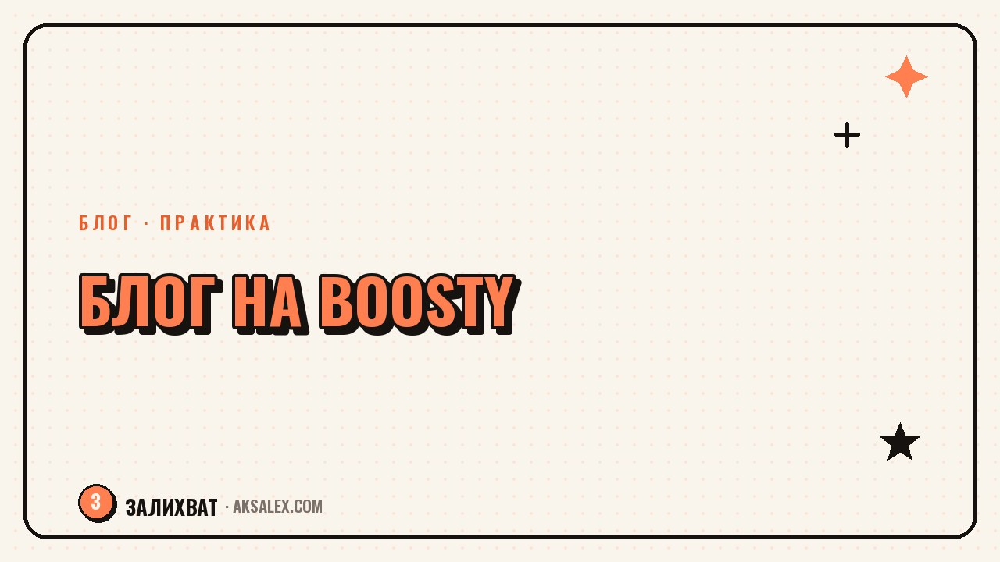

Как вести блог на Boosty: с чего начать

Boosty - российская платформа, где блогер может выставить часть контента за платную подписку, а не только собирать донаты. В отличие от разовых пожертвований, здесь аудитория платит регулярно за доступ к материалам, которых нет в открытых соцсетях. Разберём, как устроены уровни подписки, какой контент туда имеет смысл выносить и с чего начать запуск, если раньше ты вела блог только в открытом доступе.
Что такое Boosty и для кого она подходит
Boosty - это площадка для поддержки авторов, которая совмещает разовые донаты и платные подписки на уровни. Блогер создаёт страницу, подключает её к своим соцсетям и выкладывает часть материалов открыто, а часть - только для подписчиков того или иного уровня.
Платформа подходит тем, у кого уже есть постоянная аудитория в другом месте - Telegram, YouTube, VK - и материал, за который людям есть смысл платить регулярно: разборы, уроки, закрытые эфиры, расширенные версии постов. Без собранной аудитории запуск платной подписки с нуля почти не работает.
Как устроены уровни подписки
На Boosty можно создать несколько уровней подписки с разной стоимостью и разным набором привилегий - например, доступ к текстам на одном уровне, плюс видео и личные ответы на следующем. Чем понятнее разница между уровнями, тем проще человеку выбрать подходящий.
Частые варианты уровней
- Базовый - доступ к расширенным постам и ранний доступ к материалам
- Средний - плюс закрытые эфиры или разборы
- Продвинутый - плюс личное взаимодействие, обратная связь, консультации
Какой контент держать за пейволлом, а что оставлять открытым
Главная ошибка новичка - сразу закрыть почти всё, рассчитывая на быструю подписку. На деле открытый контент - это то, что приводит новых людей на страницу, а платный - то, что удерживает уже заинтересованных. Без открытой части подписчикам нечем понять, за что платить.
Платный контент работает, когда он дополняет бесплатный, а не заменяет его. Люди подписываются на углубление того, что им уже понравилось, а не на доступ к обычному контенту, который раньше был бесплатным.
- Открыто: обычные посты, короткие видео, то, что уже есть в других соцсетях
- За подпиской: разборы, уроки по шагам, закрытые эфиры, черновики и процесс работы
- За подпиской: личная обратная связь, ранний доступ к новым материалам
Таблица: Boosty и альтернативы для платных подписок
Для сравнения - чем Boosty отличается от других вариантов монетизации на подписке, доступных в России.
| Платформа | Особенность | Для кого подходит |
|---|---|---|
| Boosty | Уровни подписки, донаты, интеграция с соцсетями | Блогеры с готовой аудиторией в другом канале |
| VK Donut | Платная подписка внутри ВКонтакте | Те, кто уже ведёт блог в VK |
| Телеграм-канал с платным доступом | Встроенная монетизация Telegram | Авторы с активным Telegram-каналом |
| Разовые донаты (без подписки) | Поддержка без регулярных обязательств | Небольшая аудитория, нерегулярный контент |
Как запустить Boosty: план по шагам
Запуск лучше делать не спешно, а с подготовкой - тогда первые подписчики увидят страницу, на которой уже есть, за что платить.
- Шаг 1. Определи 2-3 уровня подписки и чётко опиши, что входит в каждый
- Шаг 2. Подготовь 3-5 материалов заранее, чтобы страница не была пустой при запуске
- Шаг 3. Анонсируй запуск в основном канале, где уже есть аудитория
- Шаг 4. Выкладывай регулярно хотя бы один платный материал в оговоренный период
- Шаг 5. Через месяц-два посмотри, какой уровень подписки выбирают чаще, и скорректируй остальные
Частые ошибки при запуске платной подписки
Самая частая ошибка - запускать подписку без регулярности, когда платный контент выходит раз в месяц без предсказуемого графика. Подписчики платят за ожидаемую ценность, и если её нет на протяжении двух-трёх месяцев, отписка почти гарантирована.
Вторая ошибка - закрывать уровнями то, что не отличается друг от друга по сути. Если разница между базовым и продвинутым уровнем малозаметна, человек выбирает дешёвый или не подписывается вовсе.
Частые вопросы
Нужна ли большая аудитория, чтобы начать вести блог на Boosty?
Формально нет технического ограничения, но на практике платная подписка почти не работает без собранной аудитории в другом канале. Сначала стоит нарастить постоянных читателей или зрителей в открытом доступе, а потом предлагать им платный уровень.
Сколько уровней подписки нужно сделать на старте?
Обычно достаточно двух-трёх уровней с понятной разницей между ними, больше вариантов только усложняет выбор для подписчика. Количество уровней можно расширить позже, когда станет видно, что реально выбирают люди.
Чем Boosty отличается от VK Donut?
Boosty - отдельная площадка с интеграцией в разные соцсети и мессенджеры, а VK Donut работает внутри ВКонтакте для тех, кто уже ведёт блог там. Выбор зависит от того, где сосредоточена основная аудитория автора.
Какой контент точно не стоит закрывать платной подпиской?
Не стоит закрывать всё, включая обычные посты, которые раньше были бесплатными - это выглядит как ухудшение, а не как новая ценность. Платный контент должен дополнять открытый, а не заменять его.
Как часто нужно выпускать платный контент на Boosty?
Важнее не частота сама по себе, а регулярность и предсказуемость - подписчики должны понимать, чего и когда ждать. Без устойчивого графика отписки начинаются уже в первые месяцы, даже если сам контент качественный.
Раз тема оказалась полезной, вот что почитать следующим. Любимое дело без видимого результата - разбираем, что с этим делать и как не бросить рано.
Читать статью →а не вручную